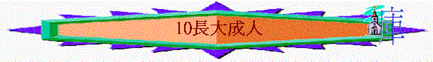
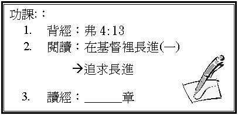

經文 弗4:11-16
一．
成長的定義
1.
何謂成長？
成長的人有什麼表現？ （弗4:13）
2.
你覺得自己成長了沒有？ 為什麼？
二.
不成長的危機 （弗4:14)
²
不成長的人似什麼？
²
他們有什麼危機？
1.
易中計
2.
易被騙
3.
4.
5.
²
在信仰路上，有否因為稍微不成長而產生以上危機？
三.
成長之路（弗４:11-16）
1.
在教會內接受裝備 （弗4:11-12）
A.
聖經提到有傳福音的，有牧師，有教師的，在那處可以找到？
B.
「為要成全聖徒」可譯作「為要裝備聖徒」，如有人說「教會會是一個良好的地方裝備信徒」，你同意嗎？
C.
有類似經歷嗎？
試分享
2.
在真道上用心學習（弗4:11-12）
A.
聖經提到「在真道上同歸於一」的意思是整體努力得著同一純一的真理，而在今日生活中可以在那�堭o到？
B.
今天你的靈修生活，讀經生活如何？
滿意嗎？ 為什麼？
3.
在生活中以主為首（弗4:15）
A.
何謂元首？ 如基督是我們的元首，我們是基督的甚麼？
在生活中應有什麼表現？
B.
在生活中你是否以主為首？ 為什麼？
4.
在肢體中彼此相助（弗4:16）
＊在弗4:12-16中教我們如何彼此相助？
²
以上的方法你自己最強是那一方面，最缺乏是那一方面？
試分享
總結 經過這麼多次的栽培課程，你有什麼得著？ 試分享
